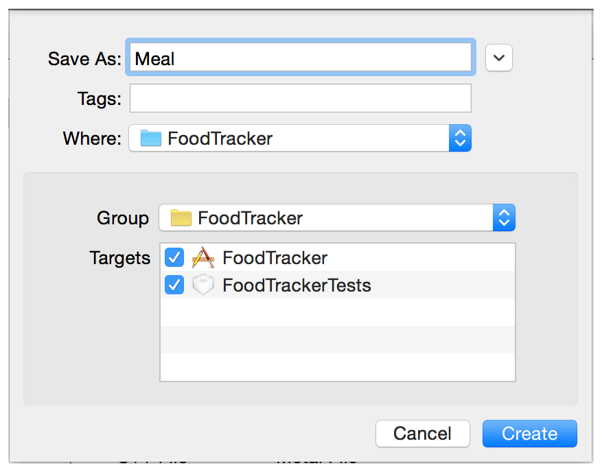
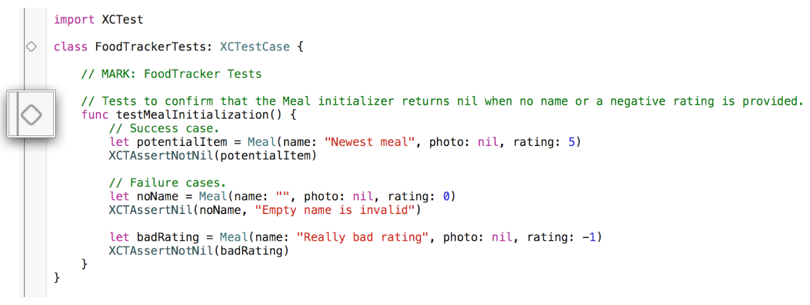
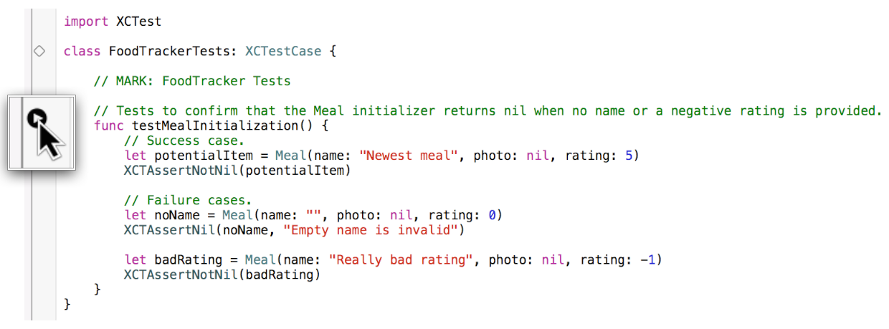
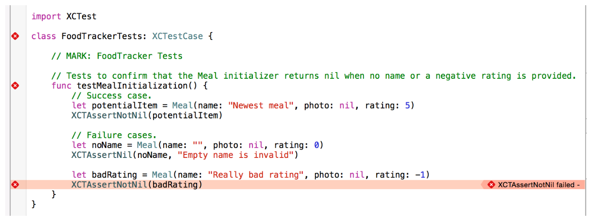
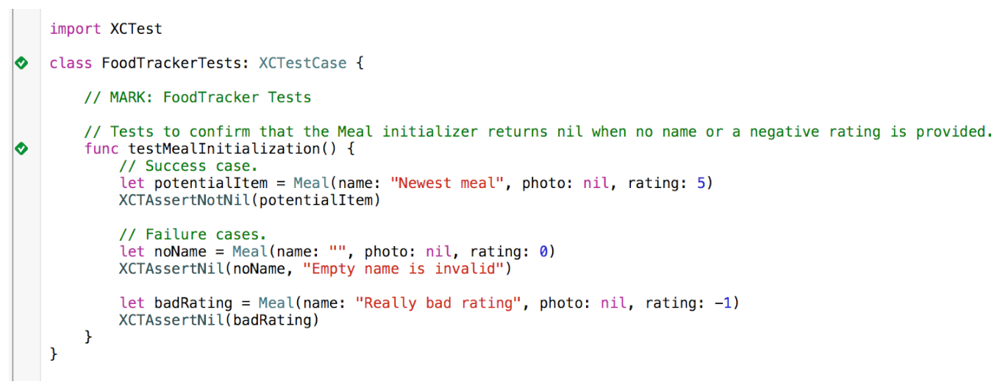

In this lesson, you’ll define and test a data model for the FoodTracker app. A data model represents the structure of information in an app.
このレッスンでは、あなたはFoodTrackerアプリのためのデータモデルを定義してテストします。あるデータモデルは、あるアプリの中の情報の構造を表現します。
Learning Objectives
学習する目標
At the end of the lesson, you’ll be able to:
このレッスンの終わりに、あなたが出来るようになるのは：
Create a data model
データモデルの作成
Write failable initializers on a custom class
失敗できるイニシャライザをカスタムクラス上で書く
Demonstrate a conceptual understanding of the difference between failable and nonfailable initializers
失敗できるそして失敗できないイニシャライザの間の違いの概念的理解を実地にうつす
Test a data model by writing and running unit tests
ユニットテストを書いて実行することでデータモデルをテストする
Create a Data Model
データモデルの作成
Now you’ll create a data model to store the information that the meal scene needs to display. To do so, you define a simple class with a name, a photo, and a rating.
今あなたはあるデータモデルを作成して、食事シーンが表示するために必要とする情報を格納しようとしています。そうするために、あなたはある簡単なクラスを名前、写真、そして格付けを使って定義します。
To create a new data model class
新しいデータモデルを作成するには
Choose File > New > File (or press Command-N).
File > New > Fileを選んでください（またはコマンド-Nを押します）。
On the left of the dialog that appears, select Source under iOS.
現れたダイアログの左で、SourceをiOSの下で選んでください。
Select Swift File, and click Next.
Swift Fileを選んで、Nextをクリックしてください。
You’re using a different process to create this class than the RatingControl class you created earlier (iOS > Source > Cocoa Touch Class), because you’re defining a base class for your data model, which means it doesn’t need to inherit from any other classes.
あなたは、以前にあなたが作成したRatingControlクラス（iOS > Source > Cocoa Touch Class）とは異なる過程でこのクラスを作成しています、なぜならあなたが定義しているのはあなたのデータモデルのためのベースクラスだからです、それが意味するのは、それが何ら他のクラスから継承する必要がないということです。
In the Save As field, type Meal.
Save As欄において、Mealをタイプしてください。
The save location defaults to your project directory.
保存場所は、初期状態であなたのプロジェクトディレクトリです。
The Group option defaults to your app name, FoodTracker.
Groupオプションは、初期状態であなたのアプリ名、FoodTrackerです。
In the Targets section, make sure your app and the tests for your app are both selected.
Targets区画において、あなたのアプリとあなたのアプリのためのテストが両方とも選択されることを確かめてください。

Click Create.
Createをクリックします。
Xcode creates a file called Meal.swift.
Xcodeは、Meal.swiftと呼ばれるファイルを作成します。
In Swift, you can represent the name using a String, the photo using a UIImage, and the rating using an Int. Because a meal will always have a name and rating, but might not have a photo, you can make the UIImage an optional.
Swiftでは、あなたは名前をStringを使って、写真はUIImageを使って、そして格付けはIntを使って表すことができます。ある食事は常に名前と格付けを持つでしょう、しかし写真は持たないかもしれないことから、あなたはUIImageをオプショナルにできます。
To define a data model for a meal
データモデルを食事に対して定義するには
If the assistant editor is open, return to the standard editor by clicking the Standard button.
アシスタントエディタが開いているならば、標準エディタにStandardボタンをクリックすることで戻ってください。
Open Meal.swift.
Meal.swiftを開いてください。
Change the import statement to import UIKit instead of Foundation:
インポート文を変更してUIKitをFoundationの代わりにインポートしてください：
importUIKit
By default, a Swift file imports the Foundation framework so you can work with Foundation data structures in your code. You’ll be working with a class from the UIKit framework, so you need to include UIKit in your import statement. Importing UIKit also gets you access to Foundation, so you can remove the redundant import to Foundation.
初期状態では、SwiftファイルはFoundationフレームワークをインポートします、それであなたはFoundationデータ構造をあなたのコードにおいて扱うことができます。あなたはUIKitフレームワークからのクラスを扱うことになります、それであなたが必要とするのはUIKitをあなたのインポート文に含めることです。UIKitのインポートはまた、あなたにFoundationへもアクセスさせます、それであなたは冗長なFoundationへのインポートを削除できます。
Below the import statement, add the following code:
このインポート文の下で、以下のコードを加えてください：
classMeal {
// MARK: Properties
varname: String
varphoto: UIImage?
varrating: Int
}
This code defines the basic properties for the data you need to store. You’re making these variables (var) instead of constants (let) because they’ll need to change throughout the course of a Meal object’s lifetime.
このコードは、基本的なプロパティをあなたが格納しなければならないデータのために定義します。あなたは、これらを変数（var）にします、定数（let）ではなく、なぜならそれらはMealオブジェクトのライフタイムの流れを通してずっと変更を必要とするからです。
Below the properties, add this code to declare an initializer:
このプロパティの下で、このコードを加えてイニシャライザを宣言してください：
Recall that an initializer is a method that prepares an instance of a class for use, which involves setting an initial value for each property and performing any other setup or initialization.
思い出してください、イニシャライザはあるメソッドです、それはあるクラスのインスタンスを使用するために準備します、それは各プロパティの初期値を設定することと何らかの他の準備や初期化を実行することを伴います。
Fill out the basic implementation by setting the properties equal to the parameter values.
基本的な実装をプロパティをパラメータ値と等しく設定することで埋めてください。
// Initialize stored properties. （保存プロパティを初期化する）
self.name = name
self.photo = photo
self.rating = rating
But what happens if you try to create a Meal with incorrect values, like an empty name or a negative rating? You’ll need to return nil to indicate that the item couldn’t be created, and has set to the default values. You need to add code to check for those cases and to return nil if they fail.
あなたがMealを不正な値、空の名前や負数の格付けなどで作成しようとするならば、何が起こるでしょうか？あなたが必要になるのはnilを返すことでその項目が作成されることができなかったと示すこと、そして省略時の値に設定されるようにすることです。あなたが必要とするのはコードを加えてこれらの場合を検査して、それらが不合格ならnilを返すことです。
At the end of the initializer, add this if statement to check for invalid values and return nil if one of them is found.
イニシャライザの終わりでこのif文を加えて不正な値か検査してそれらの１つが見つからないならばnilを返してください。
// Initialization should fail if there is no name or if the rating is negative. （初期化は、名前が無いならばまたは格付けが負数ならば、失敗するべきです。）
ifname.isEmpty || rating < 0 {
returnnil
}
Because the initializer now might return nil, you need to indicate this in the initializer signature.
イニシャライザは今ではnilを返すかもしれないので、あなたに必要なのは、これをイニシャライザシグネチャにおいて示すことです。
Click the error fix-it to add a question mark (?) to the end of the init keyword in the initializer.
エラー修正（Fix-it）をクリックして疑問符（?）をイニシャライザの中のinitキーワードの終わりに加えてください。
An initializer written like this is known as a failable initializer, which means that it’s possible for the initializer to return nil after initialization.
このように書かれるイニシャライザは、失敗できるイニシャライザとして知られます、それが意味するのは、イニシャライザが初期化の後にnilを返せるということです。
At this point, your init?(name:photo:rating:) initializer should look something like the following:
この時点で、あなたのinit?(name:photo:rating:)イニシャライザは以下のもののように見えるはずです：
// Initialization should fail if there is no name or if the rating is negative. （初期化は、名前が無いならばまたは格付けが負数ならば、失敗するべきです。）
ifname.isEmpty || rating < 0 {
returnnil
}
}
Checkpoint: Build your project by choosing Product > Build (or pressing Command-B). You’re not using your new class for anything yet, but building it gives the compiler a chance to verify that you haven’t made any typing mistakes, like forgetting the question marks (?). If you have, fix them by reading through the warnings or errors that the compiler provides, and then look back over the instructions in this lesson to make sure everything looks the way it’s described here.
確認点：あなたのプロパティをProduct > Buildを選ぶこと（またはコマンド-Bを押すこと）によってビルドしてください。あなたはあなたの新しいクラスをまだ何にも使いません、しかしそれをビルドすることはコンパイラに機会を与えてあなたが何もタイプし間違いをしなかったことを検証します、疑問符（?）を忘れているようなことを。あなたがしていたら、それらをコンパイラが提供する警告やエラーをあちこち読んで修正してください、そしてそれからこのレッスンの指示をずっと振り返って、すべてのことがそれがここで説明されるようになっているか確かめてください。
Test Your Data
あなたのデータをテストする
Although your data model code builds, you haven’t fully incorporated it into your app yet. As a result, it’s hard to tell whether you’ve implemented everything correctly, and if you might encounter edge cases that you haven’t considered at runtime.
あなたのデータモデルコードがビルドされたとは言え、あなたはまだそれをあなたのアプリに完全に組み入れてはいません。その結果、あなたが何もかもを正しく実装したかどうか、そしてあなたが考慮しなかったエッジケース（特殊な事例）に実行時に出くわしすことがあるかは、知り難いことです。
To address this uncertainty, you can write unit tests. Unit tests are used for testing small, self-contained pieces of code to make sure they behave correctly. The Meal class is a perfect candidate for unit testing.
この不確実性に取り組むために、あなたはユニットテストを書くことができます。ユニットテストは、小さな、自己充足のコード断片をテストして、それが正しく振舞うことを確かめるために使われます。Mealクラスは、ユニットテストの完璧な有資格者です。
Xcode has already created a unit test file as part of the Single View Application template.
Xcodeは、既にユニットテストファイルをSingle View Applicationひな形の一部として作成しています。
To look at the unit test file for FoodTracker
FoodTrackerのためのユニットテストファイルを見つけるには
Open the FoodTrackerTests folder in the project navigator by clicking the disclosure triangle next to it.
FoodTrackerフォルダをプロジェクトナビゲータにおいてそれの隣の開示三角形をクリックすることで開いてください。
Open FoodTrackerTests.swift.
FoodTrackerTests.swiftを開いてください。
Take a moment to understand the code in the file so far.
ちょっと時間をとって、このファイルのコードのある程度理解しましょう。
importUIKit
importXCTest
classFoodTrackerTests: XCTestCase {
overridefuncsetUp() {
super.setUp()
// Put setup code here. This method is called before the invocation of each test method in the class. （準備コードをここに置きます。このメソッドはこのクラスの中の各テストメソッドの発動の前に呼ばれます。）
}
overridefunctearDown() {
// Put teardown code here. This method is called after the invocation of each test method in the class. （解体コードをここに置きます。このメソッドはこのクラスの中の各テストメソッドの発動の後に呼ばれます）
super.tearDown()
}
functestExample() {
// This is an example of a functional test case. （これは機能テスト項目の例です。）
XCTAssert(true, "Pass")
}
functestPerformanceExample() {
// This is an example of a performance test case. （これは性能テスト項目の例です。）
self.measureBlock() {
// Put the code you want to measure the time of here. （あなたが時間を測定したいコードをここに置きます。）
}
}
}
The XCTest framework, which this file imports, is Xcode’s testing framework. The unit tests themselves are defined in a class, FoodTrackerTests, which inherits from XCTestCase. The code comments explain the setUp() and tearDown() methods.
XCTestフレームワーク、このファイルがインポートするもの、は、Xcodeのテスト用フレームワークです。ユニットテストそれ自身は、あるクラス、FoodTrackerTestsにおいて定義されます、それはXCTestCaseから継承します。コードのコメントは、setUp()とtearDown()メソッドを説明します。
The main types of tests you can write are functional tests (to check that everything is producing the values you expect) and performance tests (to check that your code is performing as fast as you expect it to). Because you haven’t written any performance-heavy code, you’ll only want to write functional tests for now.
あなたが書くことができるテストの主な種類は、機能的なテスト（あらゆるものがあなたが予期する値を生み出していることを検査するため）と性能テスト（あなたのコードがあなたがそれがそうなると予想するほど速く実行していることを検査するため）です。あなたが何ら性能上重いコードを書いていないので、あなたはただ機能テストだけを今のところ書きたいでしょう。
Start any method that you want to run as a test with “test” in the title, and give it a specific title that’ll be easy to identify later on. For example, a good test might check that a Meal gets initialized properly, and you could name it testMealInitialization.
タイトルに「test」を持ちあなたがテストとして実行を望むいずれかのメソッドで始めましょう、そして後でそれが識別しやすくなる具体的なタイトルをそれに与えましょう。例えば、１つの良いテストとして、Mealがプロパティの初期化を完了したか検査するのはどうでしょう、そしてあなたはそれにtestMealInitializationと名前を付けることができるでしょう。
To write a unit test for Meal object initialization
ユニットテストをMealオブジェクト初期化に対して書くには
In FoodTrackerTests.swift, delete the template tests.
FoodTrackerTests.swiftにおいて、ひな形テストをすべて削除します。
importUIKit
importXCTest
classFoodTrackerTests: XCTestCase {
}
You don’t need to use any part of the template implementation for this lesson.
あなたは、どのひな形実装部分もこのレッスンに使う必要はありません。
Before the last curly brace (}), add the following:
最後の波括弧（}）の前に、以下を加えてください：
// MARK: FoodTracker Tests
This is a comment to help you (and anybody else who reads your code) navigate through your tests and identify what they correspond to.
このコメントは、あなたが（そしてあなたのコードを読む他の誰でもが）あなたのテストをあちこち見ていって、それらが何に対応するのかを確認する助けとなります。
Below the comment, add a new unit test:
このコメントの下に、新しいユニットテストを加えます：
// Tests to confirm that the Meal initializer returns when no name or a negative rating is provided. （Mealイニシャライザが名前を与えられないか負数の格付けを与えられるとき戻すことを確認するテストを行う）
functestMealInitialization() {
}
First, add a test case that should pass. Add the following comment and lines of code to the testMealInitialization() test:
最初に、通るはずのテスト項目を加えます。以下のコメントとコード行をtestMealInitialization()テストに加えてください：
XCTAssertNotNil tests that the Meal object is not nil after initialization, which means the initializer successfully created a Meal object with the supplied arguments.
XCTAssertNotNilがテストするのは、Mealオブジェクトが初期化の後にnilでないことです、それはイニシャライザがMealオブジェクトを提供された引数を使って成功裏に作成したことを意味します。
Now add a test case where the Meal object should fail initialization. Add the following comment and lines of code to the testMealInitialization() test:
今度はMealオブジェクトが初期化を失敗するはずの場合のテスト項目を加えます。以下のコメントとコード行をtestMealInitialization()テストに加えてください：
// Failure cases. （失敗事例。）
letnoName = Meal(name: "", photo: nil, rating: 0)
XCTAssertNil(noName, "Empty name is invalid")
XCTAssertNil asserts that an object is nil. In this case, that means the noName object is nil, which implies that it failed initialization. You expect this initialization to fail because the name is an empty string, which you explicitly test against in your initializer.
XCTAssertNilが表明するのは、あるオブジェクトがnilであるということです。この場合、それはnoNameオブジェクトがnilであることを意味し、それは初期化が失敗した事を当然示します。あなたはこの初期化が失敗すると予想します、なぜなら名前が空の文字列だからで、それはあなたが明示的にあなたのイニシャライザにテストします。
Now add a test case where the Meal object should fail initialization, but this time, try asserting that the initialization should succeed. Add the following lines of code to the testMealInitialization() test:
今度はMealオブジェクトが初期化を失敗するはずの場合のテスト事項を加えますが、しかし今回は、初期化が成功したはずだと表明しようとするものです。以下のコード行をtestMealInitialization()テストに加えてください：
letbadRating = Meal(name: "Really bad rating", photo: nil, rating: -1)
XCTAssertNotNil(badRating)
You expect this test case to fail because the rating is negative, which you explicitly test against in your initializer.
あなたはこのテスト項目が失敗すると予想します、なぜなら格付けが負数だからで、それはあなたが明示的にあなたのイニシャライザにテストします。
Your testMealInitialization() unit test should look like this:
あなたのtestMealInitialization()ユニットテストは、このように見えるはずです：
// Tests to confirm that the Meal initializer returns when no name or a negative rating is provided. （Mealイニシャライザが名前を与えられないか負数の格付けを与えられるとき戻すことを確認するテストを行う）
letbadRating = Meal(name: "Really bad rating", photo: nil, rating: -1)
XCTAssertNotNil(badRating)
}
You can run all your unit tests at the same time by pressing Command-U, or you can run an individual test. The last test case is expected to fail because you assert that the object is non-nil even though it’s actually nil.
あなたは、すべてのあなたのユニットテストを同時に実行することがコマンド-Uを押すことで可能です、またあなたは個々のテストを実行できます。最後のテストケースは失敗するだろうと思います、なぜならあなたは、それが実際にはnilであるとしても、このオブジェクトは非nilであると表明するからです。
To run the testMealInitialization() unit test
testMealInitialization()ユニットテストを実行するには
In FoodTrackerTests.swift, find the testMealInitialization() unit test.
FoodTrackerTests.swiftにおいて、testMealInitialization()ユニットテストを見つけてください。
To the left of the test name, find a diamond shape.
テスト名の左に、ひし形を見つけてください。

Hover your mouse over the diamond to reveal a small Run button.
あなたのマウスポインタをひし形の上に重ねることで、小さな実行ボタンが現れるようにします。

Click the Run button to run the unit test.
実行ボタンをクリックしてユニットテストを実行してください。
Checkpoint: Your app runs with the unit test you just wrote. The first two test cases should pass, and the last should fail.
確認点：あなたのアプリをあなたが書いたばかりのユニットテストで実行します。最初の２つのテスト項目は通るはずです、そして最後のものは失敗するはずです。

As you see, unit testing helps catch errors in your code. If you actually expected the Meal object to be non-nil in the last test case, you would’ve caught this error during testing. (In this case, because you intentionally wrote a failing test case, you’ll just go back and fix your test case.)
あなたが見たように、ユニットテストはあなたのコードのエラーをとらえる助けとなります。あなたが実際に最後のテスト項目においてMealオブジェクトが非nilであると予想したならば、あなたはテストしている時にこのエラーを捕まえなかったでしょう。（この場合は、あなたが意図的にこの失敗するテスト項目を書いたので、あなたは単に戻ってあなたのテスト項目を修正するだけです。）
To fix the test case
このテスト項目を修正するには
In FoodTrackerTests.swift, find the testMealInitialization() unit test.
FoodTrackerTests.swiftにおいて、testMealInitialization()ユニットテストを見つけてください。
Change the last line of code to this:
コードの最後の行をこれに変更してください：
XCTAssertNil(badRating, "Negative ratings are invalid, be positive")
Your testMealInitialization() unit test should look like this:
あなたのtestMealInitialization()ユニットテストは、このように見えるはずです：
// Tests to confirm that the Meal initializer returns when no name or a negative rating is provided. （Mealイニシャライザが名前を与えられないか負数の格付けを与えられるとき戻すことを確認するテストを行う）
letbadRating = Meal(name: "Really bad rating", photo: nil, rating: -1)
XCTAssertNil(badRating, "Negative ratings are invalid, be positive")
}
Checkpoint: Your app runs with the unit test you just wrote. All test cases should pass.
確認点：あなたのアプリをあなたが書いたばかりのユニットテストで実行します。すべてのテスト項目がパスするはずです。

Unit testing is an essential part of writing code because it helps you catch errors that you might otherwise overlook. As implied by their name, it’s important to keep unit tests modular. Each test should check for a specific, basic type of behavior. If you write unit tests that are long or complicated, it’ll be harder to track down exactly what’s going wrong.
ユニットテストを行うことは、コードを記述することの極めて重要な部分です、なぜならそれは、あなたがうっかり見落とすエラーを捕らえる手助けをするからです。その名前でほのめかされるように、ユニットテストのモジュール化を保つことは重要です。各テストは、ある特定の、基本的な種類の挙動についてチェックするべきです。あなたがユニットテストを長く難解に書いたならば、何が間違っているか正確に見つけ出すのが困難になるでしょう。